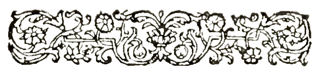
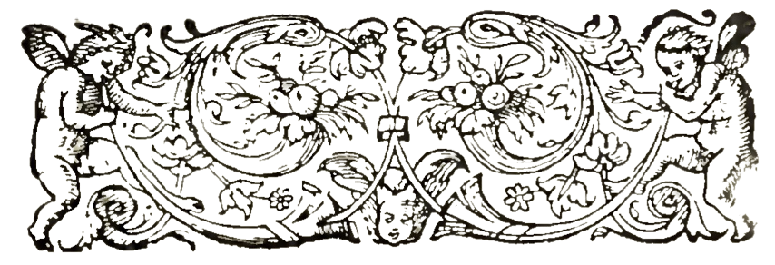

MLIS, Concentration in Archives Management. Simmons University, expected May 2024
PhD, MA in English. University of Notre Dame, 2015
BA with majors in English, Religion, and Biblical Languages and a minor in Philosophy. Walla Walla University, 2007
"The Jewish Book from Scroll to Screen," California Rare Book School, UCLA, Summer 2023
"History of the Book, 200-1820," California Rare Book School, UCLA, Summer 2023
"Digital Scholarly Editing," London Rare Book School, Institute of English Studies, School of Advanced Study, University of London, Spring 2021
"Early Modern/Postmodern: Political Theology, Secularism, Literature," School of Criticism and Theory, Cornell University, Summer 2011
"Introduction to Early Modern English Paleography," Folger Shakespeare Library Seminar, Fall 2010
Centre for Medieval and Renaissance Studies, Keble College, Oxford University, 2004-2005
Reference Assistant. O'Neill Library, Boston College, July 2023-present
Manuscript Processing and Digitization Assistant. Phillips Library, Peabody Essex Museum, July 2023-present
Digitization Assistant. Schlesinger Library, Harvard Radcliffe Institute, October 2022-present
Archives Assistant. School of Theology Library, Boston University, May 2023-July 2023
Archives Intern. Jewish Heritage Center, New England Historic Genealogical Society, January 2023-July 2023
Digital Projects Intern. Phillips Library, Peabody Essex Museum, January 2023-May 2023
Archives Intern. Congregational Library & Archives, October 2022-December 2022
Director, Honors Program. Walla Walla University, July 2021-September 2022
Associate Professor (tenured), English Department. Walla Walla University, July 2018-September 2022
Assistant Professor, English Department. Walla Walla University, September 2013-June 2018
Adjunct Teaching Fellow, English Department. University of Notre Dame, September 2011-September 2012
Instructor, University Writing Program. University of Notre Dame, September 2008-September 2009
Assistant Book Review Editor, Religion and Literature. University of Notre Dame, September 2010-September 2012
Managing Editor, Religion and Literature. University of Notre Dame, September 2009-September 2010
"Spinoza's Translation of Margaret Fell and His Portrayal of Judaism in the Theological Political Treatise." The Seventeenth Century 34, no. 1 (2019): 89-106.
"'Not in their idol-worship, but by labor': The Sabbath and the Book of Isaiah in Samson Agonistes." Milton Studies 60, no. 1-2 (2018): 134-156. (winner of the James Holly Hanford Article Award, given annually by the Milton Society of American for a distinguished article on Milton)
"Defining Religion in Milton." Co-edited with Stephen M. Fallon. Religion and Literature 45, no. 1 (Spring 2013): 132-208.
Princely Education in Early Modern Britain, by Aysha Pollnitz. Journal of British Studies 56, no. 3 (2017): 651-652.
Rhetoric, Science, and Magic in Seventeenth-Century England, by Ryan J. Stark. Religion and Literature 43, no. 1 (2011): 199-201.
"Seeking the Sabbath: Milton's Search--and Mine--for the Meaning of the Fourth Commandment." William Landeen Library Lecture. Walla Walla University. April 22, 2022.
"The Revels of Mount Dagon: Morton's New English Canaan and Milton's Samson Agonistes." International Milton Symposium. Strasbourg, France. June 17-21, 2019.
"Carpe Sabbatum: The Sabbath in Herrick's 'Corinna's Going A-Maying' and Marvell's 'To His Coy Mistress.'" South Central Renaissance Society. Lubbock, Texas. April 11-13, 2019.
"'Not in their idol-worship, but by labor': Isaiah's Sabbath Teachings in Samson Agonistes." The Conference on John Milton. Birmingham, Alabama. October 12-14, 2017.
"'Remember that thou wast a bondman in Egypt': Slavery and Sabbath-keeping in Aphra Behn's Oroonoko." Renaissance Society of American Conference. Chicago, Illinois. March 30-April 1, 2017.
"Margaret Fell and Benedict de Spinoza's Collaborations and the Theological-Political Treatise." Renaissance Society of American Conference. Boston, Massachusetts. March 31-April 2, 2016.
"Labor, Rest, and Sabbath Law in George Herbert's 'The Pulley.'" Sixteenth Century Society Conference. Vancouver, Canada. October 22-25, 2015.
"'With thee conversing I forget all time': The Sabbath in Paradise Lost." International Milton Symposium. Exeter, United Kingdom. July 20-24, 2015.
"Appropriating Andrewes: Lancelot Andrewes' Works and the Mid Seventeenth-Century English Sabbath Debates." Sixteenth Century Society Conference. New Orleans, Louisiana. October 16-19, 2014.
"Vernacular Bible Reading and the Sabbatarian Movement." Vernacular Bible and Religious Reform Conference. Catholic University of Leuven. Leuven, Belgium. November 29-December 1, 2012.
"'By their change their being doe dilate': Historicist Bible Reading in Spenser's Mutabilitie Cantoes." Sixteenth Century Society Conference. Cincinatti, Ohio. October 25-28, 2012.
"Ceremony in Milton's Samson Agonistes and Spinoza's Theological-Political Treatise." International Milton Symposium. Tokyo, Japan. August 20-24, 2012.
California Rare Book School Tuition Scholarship, Summer 2023
James Holly Hanford Article Award, Awarded Anually by the Milton Society of America for a Distinguished Article on Milton, 2018
Dominica and Frank Annese Dissertation Year Fellowship in Graduate Studies, Nanovic Institute for European Studies, University of Notre Dame, 2012-2013
Graduate Student Research Award, Institute for Scholarship in the Liberal Arts, University of Notre Dame, Fall 2012
Andrew W. Mellon Summer Stipend, Mellon Initiative on Religion across the Disciplines, University of Notre Dame, Summer 2012
Folger Shakespeare Library Grant-in-Aid, Fall 2010
ENGL 121 College Writing I
ENGL 122 College Writing II
ENGL 210 Survey of English and American Literature
ENGL 211 Survey of English and American Literature
ENGL 214 Themes in Literature: The Bible in Literature
ENGL 214 Themes in Literature: Plagues, Illness, and Medicine
ENGL 223 Research Writing
ENGL 274 Study Tour: British Literature in Context
ENGL 327 Research and Writing in Religion
ENGL 344 Medieval Literature
ENGL 345 Renaissance Literature
ENGL 360 Shakespeare at Ashland
ENGL 454/RELB 354 Literature of the Bible
ENGL 474 Study Tour: Topics in British Literature
ENGL 470 Literary and Critical Theory
HONR 131 Western Thought
HONR 132 Western Thought
HONR 243 Honors Research Writing
HONR 497 Honors Seminar
ENGL 13100 First Year Composition
ENGL 20157 The Bible in English Literature
Secretary, Library and Information Science Student Association
General Studies Committee, 2021-2022
Governance Handbook Committee, 2018-2022; Chair, 2020-2022
University Senate, 2014-2017, 2020-2022
Honors Committee, 2013-2022
Nominating Committee, 2020-2021
Rank and Tenure Committee, 2015-2019
Library Committee, 2014-2017; Chair, 2016-2017
Travel Proposal Committee, 2014-2016
Student Development Center Search Committee, 2021
School of Education and Psychology Search Committee, 2017
School of Theology Search Committee, 2016
Library Search Committee, 2016
Advisor, Lower Division Honors Students, 2021-2022
Advisor, Lower Division English Majors, 2015-2022
Assistant Coach, Ethics Bowl Team, 2015-2017
Transcription Volunteer, Congregational Library & Archives, 2022-present (create transcriptions of the manuscript sermons of Cotton Mather)
Used Book Sale Volunteer, American Association of University Women (AAUW), Walla Walla Chapter, 2015-2022 (culled and sorted book donations regularly throughout the year for a yearly used book sale fundraiser)
Candidate Forum Coordinator, American Association of University Women (AAUW), Walla Walla Chapter, 2016-2018 (organized a yearly debate forum for local candidates running for public office)
ESL Tutor, Walla Walla Public Library and Blue Mountain Action Council Adult Literacy Program, 2015-2016
Milton Society of America
Rare Books and Manuscripts Section of the Association of College and Research Libraries, American Library Association
Renaissance Society of America
Society of American Archivists
Reading proficiency in Classical Greek and Classical Latin; Familiarity with Biblical Hebrew
Familiarity with Python, HTML, CSS, XML, and TEI
